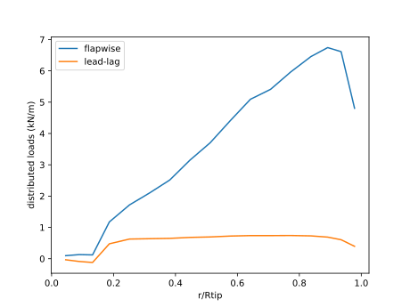
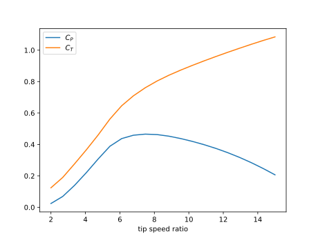
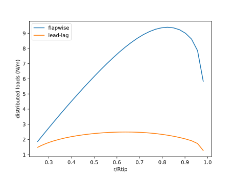
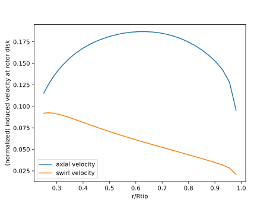
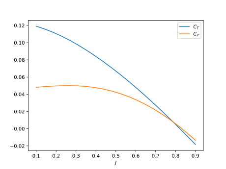
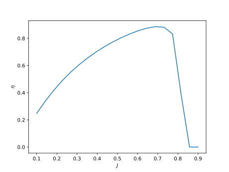

Guide
This section contains two examples, one for a wind turbine and one for a propeller. Each function in the module is introduced along the way. Because the workflow for the propeller is essentially the same as that for the wind turbine (except the operating point), the propeller example does not repeat the same level of detail or comments.
To start, we import CCBlade as well as a plotting module. I prefer to use import rather than using as it makes the namespace clear when multiple modules exist (except with plotting where it is obvious), but for the purposes of keeping this example concise I will use using.
All angles should be in radians. The only exception is the airfoil input file, which has angle of attack in degrees for readability.
using CCBlade
using PyPlotWind Turbine
First, we need to define the geometric parameterization.
CCBlade.Rotor — Type.Rotor(r, chord, theta, af, Rhub, Rtip, B, turbine, precone=0.0)Define rotor geometry
Arguments
r::Array{Float64, 1}: radial locations along turbine (Rhub < r < Rtip)chord::Array{Float64, 1}: corresponding local chord lengthstheta::Array{Float64, 1}: corresponding twist angles (radians)af::Array{function, 1}: a function of the form: cl, cd = af(alpha, Re, Mach)Rhub::Float64: hub radius (along blade length)Rtip::Float64: tip radius (along blade length)B::Int64: number of bladesturbine::Bool: true if turbine, false if propellerprecone::Float64: precone angle
Note that $r$ is the distance along the blade, rather than in the rotor plane. Rhub/Rtip define the hub and tip radius and are used for hub/tip corrections, for integration of loads, and for nondimensionalization. The parameter turbine just changes the input/output conventions. If turbine=true then the following positive directions for inputs, induced velocities, and loads are used as shown in the figure below.

The definition for the precone is shown below. Note that there is a convenience constructor where precone is omitted (defaults to zero) because while precone is often used for wind turbines it is rarely used for propellers.

Let's define the rotor, except the airfoils which require a bit more explanation. This example corresponds to the NREL 5MW reference wind turbine.
# --- rotor definition ---
r = [2.8667, 5.6000, 8.3333, 11.7500, 15.8500, 19.9500, 24.0500,
28.1500, 32.2500, 36.3500, 40.4500, 44.5500, 48.6500, 52.7500,
56.1667, 58.9000, 61.6333]
chord = [3.542, 3.854, 4.167, 4.557, 4.652, 4.458, 4.249, 4.007, 3.748,
3.502, 3.256, 3.010, 2.764, 2.518, 2.313, 2.086, 1.419]
theta = pi/180*[13.308, 13.308, 13.308, 13.308, 11.480, 10.162, 9.011, 7.795,
6.544, 5.361, 4.188, 3.125, 2.319, 1.526, 0.863, 0.370, 0.106]
Rhub = 1.5
Rtip = 63.0
B = 3 # number of blades
turbine = true
precone = 2.5*pi/180You must have Rhub < r < Rtip for all r. These are strict inequalities (not equal to).
The airfoil input is any function of the form: cl, cd = airfoil(alpha, Re, Mach) where cl and cd are the lift and drag coefficient respectively, alpha is the angle of attack in radians, Re is the Reynolds number, and Mach is the Mach number. Some of the inputs can be ignored if desired (e.g., Mach number). While users can supply any function, two convenience methods exist for creating these functions. One takes data from a file, the other uses input arrays. Both convert the data into a smooth cubic spline, with some smoothing to prevent spurious jumps, as a function of angle of attack (Re and Mach currently ignored).
The required file format contains one header line that is ignored in parsing. Its purpose is to allow you to record any information you want about the data in that file (e.g., where it came from, type of corrections applied, Reynolds number, etc.). The rest of the file contains data in columns split by whitespace (not commas) in the following order: alpha, cl, cd. You can add additional columns of data (e.g., cm), but they will be ignored in this module. Currently, only one Reynolds number is allowed.
For example, a simple file (a cylinder section) would look like:
Cylinder section with a Cd of 0.50. Re = 1 million.
-180.0 0.000 0.5000 0.000
0.00 0.000 0.5000 0.000
180.0 0.000 0.5000 0.000The function call is given by:
CCBlade.af_from_file — Method.af_from_file(filename)Read an airfoil file. Currently only reads one Reynolds number. Additional data like cm is optional but will be ignored. alpha should be in degrees
format:
header
alpha1 cl1 cd1
alpha2 cl2 cd2
alpha3 cl3 cd3
...
Returns a function of the form cl, cd = func(alpha, Re, M) although Re and M are currently ignored.
Alternatively, if you have the alpha, cl, cd data already in vectors you can initialize directly from the vectors:
CCBlade.af_from_data — Method.af_from_data(alpha, cl, cd)Create an AirfoilData object directly from alpha, cl, and cd arrays. alpha should be in radians.
af_from_file calls this function indirectly. Uses a cubic B-spline (if the order of the data permits it). A small amount of smoothing of lift and drag coefficients is also applied to aid performance for gradient-based optimization.
Returns a function of the form cl, cd = func(alpha, Re, M) although Re and M are currently ignored.
In this example, we will initialize from files since the data arrays would be rather long. The only complication is that there are 8 different airfoils used at the 17 different radial stations so we need to assign them to the correct stations corresponding to the vector $r$ defined previously.
# Define airfoils. In this case we have 8 different airfoils that we load into an array.
# These airfoils are defined in files.
aftypes = Array{Any}(undef, 8)
aftypes[1] = af_from_file("airfoils/Cylinder1.dat")
aftypes[2] = af_from_file("airfoils/Cylinder2.dat")
aftypes[3] = af_from_file("airfoils/DU40_A17.dat")
aftypes[4] = af_from_file("airfoils/DU35_A17.dat")
aftypes[5] = af_from_file("airfoils/DU30_A17.dat")
aftypes[6] = af_from_file("airfoils/DU25_A17.dat")
aftypes[7] = af_from_file("airfoils/DU21_A17.dat")
aftypes[8] = af_from_file("airfoils/NACA64_A17.dat")
# indices correspond to which airfoil is used at which station
af_idx = [1, 1, 2, 3, 4, 4, 5, 6, 6, 7, 7, 8, 8, 8, 8, 8, 8]
# create airfoil array
airfoils = aftypes[af_idx]We can now define the rotor geometry.
rotor = Rotor(r, chord, theta, airfoils, Rhub, Rtip, B, turbine, precone)Next, we need to specify the operating conditions. At a basic level the inflow conditions need to be defined as a struct defined by OperatingPoint. The parameters mu and asound are optional if Reynolds number and Mach number respectively are used in the airfoil functions.
CCBlade.OperatingPoint — Type.OperatingPoint(Vx, Vy, pitch, rho, mu=1.0, asound=1.0)Operation point for a rotor. The x direction is the axial direction, and y direction is the tangential direction in the rotor plane. See Documentation for more detail on coordinate systems. Vx and Vy vary radially at same locations as r in the rotor definition.
Arguments
Vx::Array{Float64, 1}: velocity in x-direction along bladeVy::Array{Float64, 1}: velocity in y-direction along bladepitch::Float64: pitch angle (rad). defined same direction as twist.rho::Float64: fluid densitymu::Float64: fluid dynamic viscosity (unused if Re not included in airfoil data)asound::Float64: fluid speed of sound (unused if Mach not included in airfoil data)
The coordinate system for Vx and Vy is shown at the top of Wind Turbine. In general, different inflow conditions will exist at every location along the blade, which is why Vx and Vy are arrays that should correspond to the radial r locations. The above type allows one to specify an arbitrary input definition, however, convenience methods exist for a few typical inflow conditions. For a typical wind turbine operating point you can use the windturbine_op_ function, which is based on the angles and equations shown below.

To account for the velocity change across the hub face we compute the height of each blade location relative to the hub using coordinate transformations (where $\Phi$ is the precone angle):
then apply the shear exponent ($\alpha$):
where $H_{hub}$ is the hub height. Finally, we can compute the x- and y-components of velocity with additional coordinate transformations:
CCBlade.windturbine_op — Function.windturbine_op(Vhub, Omega, pitch, r, precone, yaw, tilt, azimuth, hubHt, shearExp, rho, mu=1.0, asound=1.0)Compute relative wind velocity components along blade accounting for inflow conditions and orientation of turbine. See Documentation for angle definitions.
Arguments
Vhub::Float64: freestream speed at hub (m/s)Omega::Float64: rotation speed (rad/s)pitch::Float64: pitch angle (rad)r::Array{Float64, 1}: radial locations where inflow is computed (m)precone::Float64: precone angle (rad)yaw::Float64: yaw angle (rad)tilt::Float64: tilt angle (rad)azimuth::Float64: azimuth angle to evaluate at (rad)hubHt::Float64: hub height (m) - used for shearshearExp::Float64: power law shear exponentrho::Float64: air density (kg/m^3)mu::Float: air viscosity (Pa * s)asounnd::Float: air speed of sound (m/s)
We will use this function for this example, at a tip-speed ratio of 7.55.
# operating point for the turbine
yaw = 0.0*pi/180
tilt = 5.0*pi/180
hubHt = 90.0
shearExp = 0.2
Vinf = 10.0
tsr = 7.55
rotorR = Rtip*cos(precone)
Omega = Vinf*tsr/rotorR
azimuth = 0.0*pi/180
rho = 1.225
pitch = 0.0
op = windturbine_op(Vinf, Omega, pitch, r, precone, yaw, tilt, azimuth, hubHt, shearExp, rho)We have now defined the requisite inputs and can start using the BEM methodology. The solve function is the core of the BEM.
CCBlade.solve — Function.solve(rotor::Rotor, op::OperatingPoint)Solve the BEM equations for given rotor geometry and operating point.
Arguments
rotor::Rotor: rotor propertiesop::OperatingPoint: operating point
Returns
outputs::Outputs: BEM output data including loads, induction factors, etc.
The output result is a struct defined below. The positive directions for the normal and tangential forces, and the induced velocities are shown at the top of Wind Turbine.
CCBlade.Outputs — Type.Outputs(Np, Tp, a, ap, u, v, phi, alpha, W, cl, cd, cn, ct, F, G)Outputs from the BEM solver along the radius.
Arguments
Np::Array{Float64, 1}: normal force per unit lengthTp::Array{Float64, 1}: tangential force per unit lengtha::Array{Float64, 1}: axial induction factorap::Array{Float64, 1}: tangential induction factoru::Array{Float64, 1}: axial induced velocityv::Array{Float64, 1}: tangential induced velocityphi::Array{Float64, 1}: inflow anglealpha::Array{Float64, 1}: angle of attackW::Array{Float64, 1}: inflow velocitycl::Array{Float64, 1}: lift coefficientcd::Array{Float64, 1}: drag coefficientcn::Array{Float64, 1}: normal force coefficientct::Array{Float64, 1}: tangential force coefficientF::Array{Float64, 1}: hub/tip loss correctionG::Array{Float64, 1}: effective hub/tip loss correction for induced velocities: u = Vx * a * G, v = Vy * ap * G
Note that we use broadcasting to solve all sections in one call.
out = solve(rotor, op)Let's plot the distributed loads.
# plot distributed loads
figure()
plot(r/Rtip, out.Np/1e3)
plot(r/Rtip, out.Tp/1e3)
xlabel("r/Rtip")
ylabel("distributed loads (kN/m)")
legend(["flapwise", "lead-lag"])
We are likely also interested in integrated loads, like thrust and torque, which are provided by the function thrusttorque.
CCBlade.thrusttorque — Function.thrusttorque(rotor::Rotor, outputs::Outputs)integrate the thrust/torque across the blade, including 0 loads at hub/tip, using a trapezoidal rule.
Arguments
rotor::Rotor: rotor objectoutputs::Outputs: output data along blade
Returns
T::Array{Float64, 1}: thrust (along x-dir see Documentation).Q::Array{Float64, 1}: torque (along x-dir see Documentation).
thrusttorque(rotor::Rotor, outputs::AbstractArray{Outputs{TF}, 1}) where TF <: NumberIntegrate the thrust/torque across the blade given an array of output data. Generally used for azimuthal averaging of thrust/torque.
T, Q = thrusttorque(rotor, out)(653171.7946659301, 3.8033413768407363e6)As used in the above example, this would give the thrust and torque assuming the inflow conditions were constant with azimuth (overly optimistic with this case at azimuth=0). If one wanted to compute thrust and torque using azimuthal averaging you would compute multiple inflow conditions with different azimuth angles and then average the resulting forces. This can be conveniently done with broadcasting. We don't want to broadcast across r (we are broadcasting across the four different azimuth angles) so we need to wrap r in a Ref() statement. Similarly, we don't want to broadcast the solve across rotor objects. If uncomforable with broadcasting, this could all be done easily with a for loop. The thrusttorque function is overloaded with a version that accepts an array of outputs rather than a single output and performs an integration using averaging across the conditions.
azangles = pi/180*[0.0, 90.0, 180.0, 270.0]
ops = windturbine_op.(Vinf, Omega, pitch, Ref(r), precone, yaw, tilt, azangles, hubHt, shearExp, rho)
outs = solve.(Ref(rotor), ops)
T, Q = thrusttorque(rotor, outs)(584071.6090564275, 2.9598293643747694e6)One final convenience function is to nondimensionalize the outputs. The nondimensionalization uses different conventions depending on the application. For a wind turbine the nondimensionalization is:
where
CCBlade.nondim — Function.nondim(T, Q, Vhub, Omega, rho, rotor)Nondimensionalize the outputs.
Arguments
T::Float64: thrust (N)Q::Float64: torque (N-m)Vhub::Float64: hub speed used in turbine normalization (m/s)Omega::Float64: rotation speed used in propeller normalization (rad/s)rho::Float64: air density (kg/m^3)rotor::Rotor: rotor object
Returns
if windturbine
CP::Float64: power coefficientCT::Float64: thrust coefficientCQ::Float64: torque coefficient
if propeller
eff::Float64: efficiencyCT::Float64: thrust coefficientCQ::Float64: torque coefficient
CP, CT, CQ = nondim(T, Q, Vinf, Omega, rho, rotor)(0.465775519477373, 0.7662246678173171, 0.06169212178508251)As a final example, let's create a nondimensional power curve for this turbine (power coefficient vs tip-speed-ratio):
ntsr = 20 # number of tip-speed ratios
tsrvec = range(2, 15, length=ntsr)
cpvec = zeros(ntsr) # initialize arrays
ctvec = zeros(ntsr)
azangles = pi/180*[0.0, 90.0, 180.0, 270.0]
for i = 1:ntsr
Omega = Vinf*tsrvec[i]/rotorR
ops = windturbine_op.(Vinf, Omega, pitch, Ref(r), precone, yaw, tilt, azangles, hubHt, shearExp, rho)
outs = solve.(Ref(rotor), ops)
T, Q = thrusttorque(rotor, outs)
cpvec[i], ctvec[i], _ = nondim(T, Q, Vinf, Omega, rho, rotor)
end
figure()
plot(tsrvec, cpvec)
plot(tsrvec, ctvec)
xlabel("tip speed ratio")
legend([L"C_P", L"C_T"])
Propellers
The propeller analysis follows a very similar format. The areas that are in common will not be repeated, only differences will be highlighted.
Again, we first define the geometry, including the airfoils (which are the same along the blade in this case). The positive conventions for a propeller (turbine=false) are shown in the figure below. The underlying theory is unified across the two methods, but the input/output conventions differ to match common usage in the respective domains.

# rotor definition
Rhub = 0.0254*.5
Rtip = 0.0254*3.0
B = 2 # number of blades
turbine = false
r = .0254*[0.7526, 0.7928, 0.8329, 0.8731, 0.9132, 0.9586, 1.0332,
1.1128, 1.1925, 1.2722, 1.3519, 1.4316, 1.5114, 1.5911,
1.6708, 1.7505, 1.8302, 1.9099, 1.9896, 2.0693, 2.1490, 2.2287,
2.3084, 2.3881, 2.4678, 2.5475, 2.6273, 2.7070, 2.7867, 2.8661, 2.9410]
chord = .0254*[0.6270, 0.6255, 0.6231, 0.6199, 0.6165, 0.6125, 0.6054, 0.5973, 0.5887,
0.5794, 0.5695, 0.5590, 0.5479, 0.5362, 0.5240, 0.5111, 0.4977,
0.4836, 0.4689, 0.4537, 0.4379, 0.4214, 0.4044, 0.3867, 0.3685,
0.3497, 0.3303, 0.3103, 0.2897, 0.2618, 0.1920]
theta = pi/180.0*[40.2273, 38.7657, 37.3913, 36.0981, 34.8803, 33.5899, 31.6400,
29.7730, 28.0952, 26.5833, 25.2155, 23.9736, 22.8421, 21.8075,
20.8586, 19.9855, 19.1800, 18.4347, 17.7434, 17.1005, 16.5013,
15.9417, 15.4179, 14.9266, 14.4650, 14.0306, 13.6210, 13.2343,
12.8685, 12.5233, 12.2138]
af = af_from_file("airfoils/NACA64_A17.dat")
airfoils = fill(af, length(r))
rotor = Rotor(r, chord, theta, airfoils, Rhub, Rtip, B, turbine)Next, we define the operating point. For a propeller, it typically doesn't operate with tilt, yaw, and shear like a wind turbine does, so we have defined another convenience function for simple uniform inflow. Like before, you can always define your own arbitrary inflow object.
CCBlade.simple_op — Function.simple_op(Vinf, Omega, r, rho, pitch=0.0, mu=1.0, asound=1.0, precone=0.0)Uniform inflow through rotor. Returns an Inflow object.
Arguments
Vinf::Float: freestream speed (m/s)Omega::Float: rotation speed (rad/s)r::Float{Float64, 1}: radial location where inflow is computed (m)rho::Float: air density (kg/m^3)pitch::Float: pitch (rad)mu::Float: air viscosity (Pa * s)asounnd::Float: air speed of sound (m/s)precone::Float64: precone angle (rad)
In this example, we assume simple inflow.
rho = 1.225
Vinf = 10.0
Omega = 8000.0*pi/30.0
op = simple_op(Vinf, Omega, r, rho)We can now computed distributed loads and induced velocities.
outputs = solve(rotor, op)
figure()
plot(r/Rtip, outputs.Np)
plot(r/Rtip, outputs.Tp)
xlabel("r/Rtip")
ylabel("distributed loads (N/m)")
legend(["flapwise", "lead-lag"])
This time we will also look at the induced velocities. This is usually not of interest for wind turbines, but for propellers can be useful to assess, for example, prop-on-wing interactions.
figure()
plot(r/Rtip, outputs.u/Vinf)
plot(r/Rtip, outputs.v/Vinf)
xlabel("r/Rtip")
ylabel("(normalized) induced velocity at rotor disk")
legend(["axial velocity", "swirl velocity"])
As before, we'd like to evaluate integrated quantities at multiple conditions in a for loop (advance ratios as is convention for propellers instead of tip-speed ratios). The normalization conventions for a propeller are:
where
Efficiency is set to zero if the thrust is negative (producing drag).
The code below performs this analysis then plots thrust coefficient, power coefficient, and efficiency as a function of advance ratio.
nJ = 20 # number of advance ratios
J = range(0.1, 0.9, length=nJ) # advance ratio
Omega = 8000.0*pi/30
n = Omega/(2*pi)
D = 2*Rtip
eff = zeros(nJ)
CT = zeros(nJ)
CQ = zeros(nJ)
for i = 1:nJ
Vinf = J[i] * D * n
op = simple_op(Vinf, Omega, r, rho)
outputs = solve(rotor, op)
T, Q = thrusttorque(rotor, outputs)
eff[i], CT[i], CQ[i] = nondim(T, Q, Vinf, Omega, rho, rotor)
end
figure()
plot(J, CT)
plot(J, CQ*2*pi)
xlabel(L"J")
legend([L"C_T", L"C_P"])
figure()
plot(J, eff)
xlabel(L"J")
ylabel(L"\eta") 